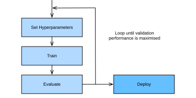

Tối ưu hóa siêu tham số là gì?¶
Như chúng ta đã thấy trong các chương trước, mạng nơ-ron sâu đi kèm với một số lượng lớn tham số hoặc trọng số được học trong quá trình huấn luyện. Bên cạnh đó, mọi mạng nơ-ron đều có thêm các siêu tham số cần được người dùng cấu hình. Ví dụ, để đảm bảo stochastic gradient descent hội tụ đến một cực tiểu cục bộ của training loss (xem chap_optimization), chúng ta phải điều chỉnh learning rate và batch size. Để tránh overfitting trên các bộ dữ liệu huấn luyện, ta có thể phải đặt các tham số regularization, chẳng hạn weight decay (xem sec_weight_decay) hoặc dropout (xem sec_dropout). Chúng ta có thể định nghĩa capacity và inductive bias của mô hình bằng cách đặt số tầng và số đơn vị hoặc bộ lọc trên mỗi tầng (tức số lượng hiệu dụng của trọng số).
Đáng tiếc là chúng ta không thể đơn giản điều chỉnh các siêu tham số này bằng cách tối thiểu hóa training loss, vì điều này sẽ dẫn đến overfitting trên dữ liệu huấn luyện. Ví dụ, đặt các tham số regularization, chẳng hạn dropout hoặc weight decay, bằng không dẫn đến training loss nhỏ, nhưng có thể làm tổn hại hiệu năng khái quát hóa.

Nếu không có một dạng tự động hóa khác, các siêu tham số phải được đặt thủ công
theo kiểu thử-sai, một phần tốn thời gian và khó khăn
trong các quy trình học máy. Ví dụ, xét việc huấn luyện
một ResNet (xem sec_resnet) trên CIFAR-10, cần hơn 2 giờ
trên một instance Amazon Elastic Cloud Compute (EC2) g4dn.xlarge. Ngay cả khi chỉ
thử mười cấu hình siêu tham số tuần tự, việc này đã mất khoảng
một ngày. Tệ hơn nữa, các siêu tham số thường không trực tiếp
chuyển được giữa kiến trúc và bộ dữ liệu
[feurer-arxiv22, wistuba-ml18, bardenet-icml13a], và cần được tối ưu lại
cho mỗi tác vụ mới. Ngoài ra, với hầu hết siêu tham số, không có quy tắc kinh nghiệm nào,
và cần kiến thức chuyên gia để tìm các giá trị hợp lý.
Các thuật toán tối ưu hóa siêu tham số (HPO) được thiết kế để giải quyết bài toán này một cách có nguyên tắc và tự động [feurer-automlbook18a], bằng cách định khung nó như một bài toán tối ưu hóa toàn cục. Mục tiêu mặc định là lỗi trên bộ dữ liệu validation tách riêng, nhưng về nguyên tắc có thể là bất kỳ metric nghiệp vụ nào khác. Nó có thể được kết hợp với hoặc bị ràng buộc bởi các mục tiêu phụ, chẳng hạn thời gian huấn luyện, thời gian suy luận, hoặc độ phức tạp mô hình.
Gần đây, tối ưu hóa siêu tham số đã được mở rộng sang neural architecture search (NAS) [elsken-arxiv18a, wistuba-arxiv19], trong đó mục tiêu là tìm các kiến trúc mạng nơ-ron hoàn toàn mới. So với HPO cổ điển, NAS còn tốn kém hơn về mặt tính toán và cần thêm nỗ lực để khả thi trong thực tế. Cả HPO và NAS đều có thể được xem là các nhánh con của AutoML [hutter-book19a], vốn nhằm tự động hóa toàn bộ pipeline ML.
Trong phần này, chúng ta sẽ giới thiệu HPO và chỉ ra cách tự động tìm các siêu tham số tốt nhất của ví dụ hồi quy logistic đã giới thiệu trong sec_softmax_concise.
Bài toán tối ưu hóa¶
Chúng ta sẽ bắt đầu với một bài toán toy đơn giản: tìm learning rate của
mô hình hồi quy logistic đa lớp SoftmaxRegression từ
sec_softmax_concise để tối thiểu hóa lỗi validation trên bộ dữ liệu Fashion
MNIST. Dù các siêu tham số khác như batch size hoặc số epoch
cũng đáng để tinh chỉnh, để đơn giản chúng ta chỉ tập trung vào learning rate.
from d2l import torch as d2l
import numpy as np
import torch
from torch import nn
from scipy import stats
Trước khi có thể chạy HPO, trước tiên chúng ta cần định nghĩa hai thành phần: hàm mục tiêu và không gian cấu hình.
Hàm mục tiêu¶
Hiệu năng của một thuật toán học có thể được xem là một hàm \(f: \mathcal{X} \rightarrow \mathbb{R}\) ánh xạ từ không gian siêu tham số \(\mathbf{x} \in \mathcal{X}\) đến validation loss. Với mỗi lần đánh giá \(f(\mathbf{x})\), chúng ta phải huấn luyện và validation mô hình học máy, việc này có thể tốn thời gian và tính toán trong trường hợp mạng nơ-ron sâu được huấn luyện trên các bộ dữ liệu lớn. Với tiêu chí \(f(\mathbf{x})\), mục tiêu của chúng ta là tìm \(\mathbf{x}_{\star} \in \mathrm{argmin}_{\mathbf{x} \in \mathcal{X}} f(\mathbf{x})\).
Không có cách đơn giản nào để tính gradient của \(f\) theo \(\mathbf{x}\), vì việc đó sẽ yêu cầu lan truyền gradient qua toàn bộ quá trình huấn luyện. Dù có các công trình gần đây [maclaurin-icml15, franceschi-icml17a] nhằm dẫn dắt HPO bằng các "hypergradient" xấp xỉ, chưa có cách tiếp cận hiện có nào cạnh tranh được với trạng thái tiên tiến, và chúng ta sẽ không thảo luận chúng ở đây. Hơn nữa, gánh nặng tính toán khi đánh giá \(f\) yêu cầu các thuật toán HPO tiệm cận tối ưu toàn cục với càng ít mẫu càng tốt.
Việc huấn luyện mạng nơ-ron là ngẫu nhiên (ví dụ, trọng số được khởi tạo ngẫu nhiên, mini-batch được lấy mẫu ngẫu nhiên), do đó các quan sát của chúng ta sẽ có nhiễu: \(y \sim f(\mathbf{x}) + \epsilon\), trong đó chúng ta thường giả định nhiễu quan sát \(\epsilon \sim N(0, \sigma)\) có phân phối Gaussian.
Đối mặt với tất cả thách thức này, chúng ta thường cố gắng nhanh chóng xác định một tập nhỏ các cấu hình siêu tham số hoạt động tốt, thay vì chạm chính xác tối ưu toàn cục. Tuy nhiên, do nhu cầu tính toán lớn của hầu hết mô hình mạng nơ-ron, ngay cả việc này cũng có thể mất nhiều ngày hoặc nhiều tuần tính toán. Chúng ta sẽ khảo sát trong sec_mf_hpo cách tăng tốc quá trình tối ưu hóa bằng cách phân tán tìm kiếm hoặc dùng các xấp xỉ rẻ hơn để đánh giá của hàm mục tiêu.
Chúng ta bắt đầu với một phương thức để tính lỗi validation của một mô hình.
class HPOTrainer(d2l.Trainer):
def validation_error(self):
self.model.eval()
accuracy = 0
val_batch_idx = 0
for batch in self.val_dataloader:
with torch.no_grad():
x, y = self.prepare_batch(batch)
y_hat = self.model(x)
accuracy += self.model.accuracy(y_hat, y)
val_batch_idx += 1
return 1 - accuracy / val_batch_idx
Chúng ta tối ưu hóa lỗi validation theo cấu hình siêu tham số
config, gồm learning_rate. Với mỗi lần đánh giá, chúng ta huấn luyện
mô hình trong max_epochs epoch, rồi tính và trả về lỗi validation:
def hpo_objective_softmax_classification(config, max_epochs=8):
learning_rate = config["learning_rate"]
trainer = d2l.HPOTrainer(max_epochs=max_epochs)
data = d2l.FashionMNIST(batch_size=16)
model = d2l.SoftmaxRegression(num_outputs=10, lr=learning_rate)
trainer.fit(model=model, data=data)
return d2l.numpy(trainer.validation_error())
Không gian cấu hình¶
Cùng với hàm mục tiêu \(f(\mathbf{x})\), chúng ta cũng cần định nghĩa tập khả thi \(\mathbf{x} \in \mathcal{X}\) để tối ưu trên đó, được gọi là không gian cấu hình hoặc không gian tìm kiếm. Với ví dụ hồi quy logistic của chúng ta, ta sẽ dùng:
Ở đây chúng ta dùng đối tượng loguniform từ SciPy, biểu diễn một
phân phối đều giữa -4 và -1 trong không gian log. Đối tượng này
cho phép chúng ta lấy mẫu các biến ngẫu nhiên từ phân phối này.
Mỗi siêu tham số có một kiểu dữ liệu, chẳng hạn float cho learning_rate,
cũng như một khoảng đóng bị chặn (tức cận dưới và cận trên). Chúng ta thường gán
một phân phối prior (ví dụ, uniform hoặc log-uniform) cho mỗi siêu tham số để
lấy mẫu. Một số tham số dương, chẳng hạn learning_rate, được biểu diễn tốt nhất
trên thang log vì các giá trị tối ưu có thể khác nhau vài
bậc độ lớn, trong khi các tham số khác, chẳng hạn momentum, đi với thang tuyến tính.
Bên dưới chúng ta hiển thị một ví dụ đơn giản về không gian cấu hình gồm các siêu tham số điển hình của một perceptron nhiều tầng, bao gồm kiểu và khoảng chuẩn của chúng.
: Ví dụ không gian cấu hình của perceptron nhiều tầng
| Tên | Kiểu | Khoảng siêu tham số | thang log |
|---|---|---|---|
| learning rate | float | \([10^{-6},10^{-1}]\) | có |
| batch size | integer | \([8,256]\) | có |
| momentum | float | \([0,0.99]\) | không |
| activation function | categorical | \(\{\textrm{tanh}, \textrm{relu}\}\) | - |
| number of units | integer | \([32, 1024]\) | có |
| number of layers | integer | \([1, 6]\) | không |
Nhìn chung, cấu trúc của không gian cấu hình \(\mathcal{X}\) có thể phức tạp và có thể khá khác với \(\mathbb{R}^d\). Trong thực tế, một số siêu tham số có thể phụ thuộc vào giá trị của các siêu tham số khác. Ví dụ, giả sử chúng ta cố tinh chỉnh số tầng cho một perceptron nhiều tầng, và với mỗi tầng là số đơn vị. Số đơn vị của tầng thứ \(l\textrm{-th}\) chỉ liên quan nếu mạng có ít nhất \(l+1\) tầng. Những bài toán HPO nâng cao này nằm ngoài phạm vi của chương này. Chúng tôi giới thiệu độc giả quan tâm đến [hutter-lion11a, jenatton-icml17a, baptista-icml18a].
Không gian cấu hình đóng vai trò quan trọng trong tối ưu hóa siêu tham số, vì không thuật toán nào có thể tìm thứ không nằm trong không gian cấu hình. Mặt khác, nếu các khoảng quá lớn, ngân sách tính toán để tìm các cấu hình hoạt động tốt có thể trở nên bất khả thi.
Random Search¶
Random search là thuật toán tối ưu hóa siêu tham số đầu tiên chúng ta sẽ xét. Ý tưởng chính của random search là lấy mẫu độc lập từ không gian cấu hình cho đến khi cạn một ngân sách định trước (ví dụ số lần lặp tối đa), và trả về cấu hình tốt nhất đã quan sát. Tất cả các đánh giá có thể được thực thi độc lập song song (xem sec_rs_async), nhưng ở đây chúng ta dùng một vòng lặp tuần tự để đơn giản.
errors, values = [], []
num_iterations = 5
for i in range(num_iterations):
learning_rate = config_space["learning_rate"].rvs()
print(f"Trial {i}: learning_rate = {learning_rate}")
y = hpo_objective_softmax_classification({"learning_rate": learning_rate})
print(f" validation_error = {y}")
values.append(learning_rate)
errors.append(y)
Learning rate tốt nhất sau đó đơn giản là learning rate có lỗi validation thấp nhất.
Do tính đơn giản và tổng quát, random search là một trong các thuật toán HPO được dùng thường xuyên nhất. Nó không yêu cầu triển khai tinh vi nào và có thể áp dụng cho bất kỳ không gian cấu hình nào miễn là chúng ta có thể định nghĩa một phân phối xác suất cho mỗi siêu tham số.
Đáng tiếc là random search cũng có một vài nhược điểm. Thứ nhất, nó không điều chỉnh phân phối lấy mẫu dựa trên các quan sát trước đó đã thu thập được. Do đó, nó có khả năng lấy mẫu một cấu hình hoạt động kém ngang với một cấu hình hoạt động tốt hơn. Thứ hai, cùng một lượng tài nguyên được dành cho mọi cấu hình, dù một số có thể cho thấy hiệu năng ban đầu kém và ít có khả năng vượt trội so với các cấu hình đã thấy trước đó.
Trong các phần tiếp theo, chúng ta sẽ xem các thuật toán tối ưu hóa siêu tham số hiệu quả mẫu hơn, khắc phục nhược điểm của random search bằng cách dùng một mô hình để dẫn dắt tìm kiếm. Chúng ta cũng sẽ xem các thuật toán tự động dừng quá trình đánh giá của các cấu hình hoạt động kém để tăng tốc quá trình tối ưu hóa.
Tóm tắt¶
Trong phần này, chúng ta đã giới thiệu tối ưu hóa siêu tham số (HPO) và cách diễn đạt nó như một bài toán tối ưu toàn cục bằng cách định nghĩa không gian cấu hình và hàm mục tiêu. Chúng ta cũng đã triển khai thuật toán HPO đầu tiên, random search, và áp dụng nó cho một bài toán phân loại softmax đơn giản.
Dù random search rất đơn giản, nó là phương án tốt hơn so với grid search, vốn chỉ đánh giá một tập siêu tham số cố định. Random search phần nào giảm nhẹ lời nguyền chiều [bellman-science66], và có thể hiệu quả hơn nhiều so với grid search nếu tiêu chí phụ thuộc mạnh nhất vào một tập con nhỏ các siêu tham số.
Bài tập¶
- Trong chương này, chúng ta tối ưu hóa lỗi validation của một mô hình sau khi huấn luyện trên một tập huấn luyện rời nhau. Để đơn giản, code của chúng ta dùng
Trainer.val_dataloader, ánh xạ đến một loader quanhFashionMNIST.val.- Hãy tự thuyết phục mình (bằng cách xem code) rằng điều này có nghĩa là chúng ta dùng tập huấn luyện FashionMNIST gốc (60000 ví dụ) để huấn luyện, và tập kiểm tra gốc (10000 ví dụ) để validation.
- Vì sao thực hành này có thể có vấn đề? Gợi ý: Đọc lại sec_generalization_basics, đặc biệt phần model selection.
- Thay vào đó chúng ta nên làm gì?
- Ở trên, chúng ta đã nói rằng tối ưu hóa siêu tham số bằng gradient descent rất khó thực hiện. Xét một bài toán nhỏ, chẳng hạn huấn luyện một perceptron hai tầng trên bộ dữ liệu FashionMNIST (sec_mlp-implementation) với batch size 256. Chúng ta muốn tinh chỉnh learning rate của SGD để tối thiểu hóa một metric validation sau một epoch huấn luyện.
- Vì sao chúng ta không thể dùng lỗi validation cho mục đích này? Bạn sẽ dùng metric nào trên tập validation?
- Phác thảo (sơ bộ) đồ thị tính toán của metric validation sau khi huấn luyện một epoch. Bạn có thể giả định trọng số khởi tạo và siêu tham số (như learning rate) là các node đầu vào của đồ thị này. Gợi ý: Đọc lại về đồ thị tính toán trong sec_backprop.
- Ước lượng sơ bộ số giá trị dấu phẩy động cần lưu trong một forward pass trên đồ thị này. Gợi ý: FashionMNIST có 60000 mẫu. Giả sử bộ nhớ cần thiết bị chi phối bởi các activation sau mỗi tầng, và tra độ rộng tầng trong sec_mlp-implementation.
- Ngoài lượng tính toán và lưu trữ rất lớn cần thiết, tối ưu hóa siêu tham số dựa trên gradient còn gặp những vấn đề nào khác? Gợi ý: Đọc lại về gradient biến mất và bùng nổ trong sec_numerical_stability.
- Nâng cao: Đọc [maclaurin-icml15] để biết một cách tiếp cận thanh lịch (nhưng vẫn hơi không thực tế) cho HPO dựa trên gradient.
- Grid search là một baseline HPO khác, trong đó chúng ta định nghĩa một lưới cách đều cho mỗi siêu tham số, rồi lặp qua tích Descartes (tổ hợp) để đề xuất các cấu hình.
- Ở trên, chúng ta đã nói rằng random search có thể hiệu quả hơn nhiều so với grid search cho HPO trên một số lượng siêu tham số đáng kể, nếu tiêu chí phụ thuộc mạnh nhất vào một tập con nhỏ các siêu tham số. Vì sao? Gợi ý: Đọc [bergstra2011algorithms].